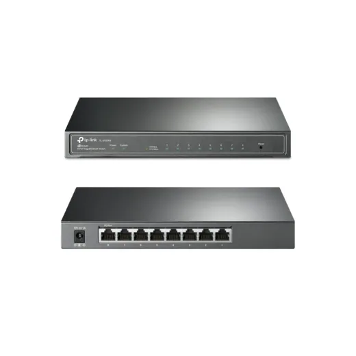
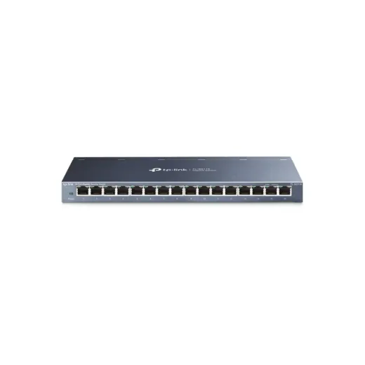
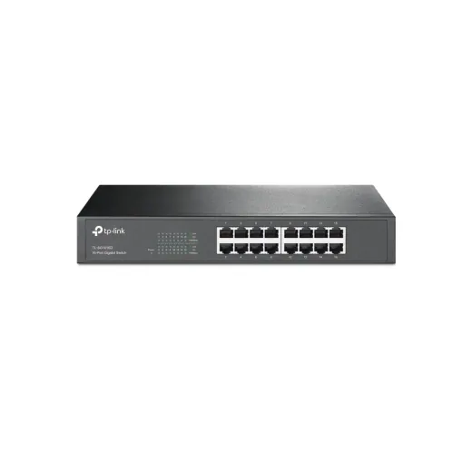
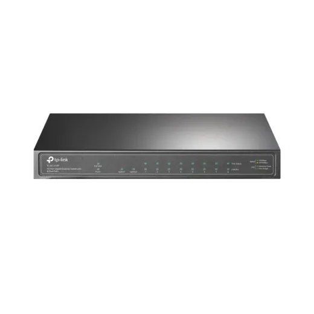
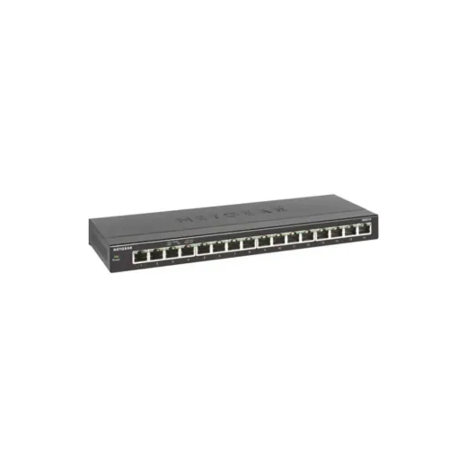
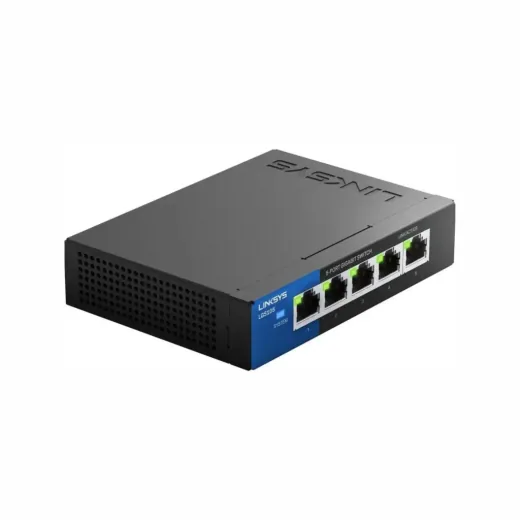
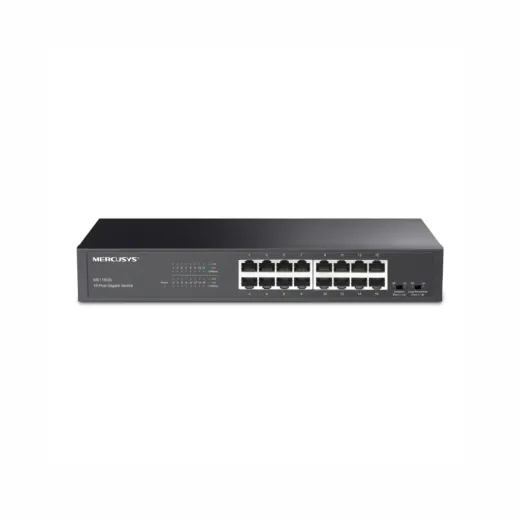
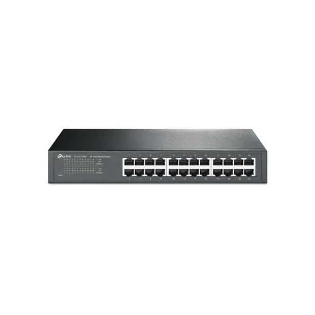
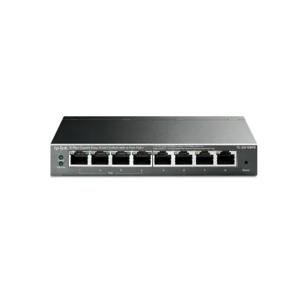

Inicio › Otros de tecnología y hogar

Puertos · Modelo TLSG2008
Switch de 8 Puertos Gigabit Smart TPLINK OMADA JetStream TL-SG2008
L 2,150.01
En Sycom
Precio en cada tienda
| Tienda | Precio | Antes | Disponibilidad | |
|---|---|---|---|---|
| Sycom | L 2,150.01 | — | Disponible | Ver en tienda › |
Precios referenciales tomados de cada tienda el 14 de noviembre de 2026. El precio válido es el que muestra la tienda al comprar.
Otros otros de tecnología y hogar Puertos

Switch de 16 Puertos TP-Link GIGABIT TL-SG116L 2,150.01En Sycom
Switch de 16 Puertos TPLINK TL-SG1016D DESKTOP GigabitL 2,185En Sycom
Switch de 10 Puertos TPLINK TL-SG1210P Gigabit 8x POE Total Max 63WL 2,300En Sycom
Switch de 16 Puertos Netgear GS316-100NAS GigabitL 1,995En Sycom
Switch de 5 Puertos Linksys LGS105P 5 Puertos POE Gigabit Desktop LGS105P-NAL 1,995En Sycom
Switch de 16 Puertos Gigabit MERCUSYS MS116GS NegroL 1,610En Sycom
Switch de 24 Puertos TPLINK TL-SF1024D Rackeable/Desktop 10/100ML 1,595En Sycom
Switch de 8 Puertos Gigabit Easy Smart TPLINK TL-SG108PE 4 Port POE + 4 NO POEL 1,595En Sycom